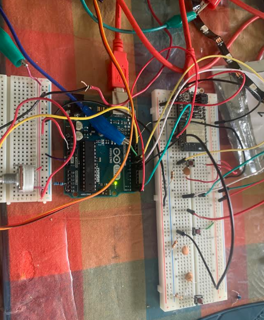

Personal Patient Monitors (PPM) - the Design and Building Process
The documentation of the process behind my final project
This page will describe in detail how my final project was designed, built, and coded for. I'll start with an overview of how it works, and then go through each subsection in more detail.
Overview of How PPM Works
The device I designed works as follows:
First, a patient can use buttons connected to an arduino uno to scroll left and right through five lights on an LED strip. These five lights correspond to five common comorbidities of COVID-19 it would be good to have more data on, and are breathing, stomach pain, chest pain, confusion, and cough.
Next, once a patient scrolls to the LED light corresponding to the comorbidity they want to update, they can use a potentiomoter as a knob that can turn the servo motor between 0 and 180 degrees. 0 degrees corresponds to them doing particularly badly with a particular commorbidity, and 180 to them doing really well.
After turning the servo motor to the appropriate degree corresponding to how the patient is doing, they hit the enter button. This enter button converts their servo motor degree to a value between 1 and 6, and sends an array of these values for each commorbidity serial input to an adafruit huzzah feather.
The huzzah reads this serial input and sends it to a firebase database. This database is connected to a webpage that includes a table that updates in real time with database values. This table displays the patient number and their latest indication for how they are doing on a scale from 1 to 6 (1 being the worst) for each of the five comorbidities.
Now, let's talk in more detail about how each of these steps was designed and programmed.
Buttons to Scroll Through the LED Strip
The first part of the project I wanted to get down was using two buttons - a "left" and a "right" button to scroll through the LEDs on the LED strip. This is so patient users can scroll through the different comorbidities they want to update.
My first try was to set these buttons up as pull down resistor buttons. This means that when the button is pressed, the input pin on the arduino receives a "HIGH" voltage input. I designed this circuit using circuit diagram and it looks like:
The next thing to do was write the code for two of these Pull Down buttons. This code's logic was essentially a nested if statement. For example, for the left button, if this is pressed, I wanted the LED strip to move to light up the LED one left to one currently lit up, unless we were all the way at the end of the strip, then I wanted the LED at the other end to light up.
In order to update the LED strip, I made a function that takes an integer as an input. This integer, that I call the state of the LED strip, takes a value between 0 and 4 and describes which LED on the LED strip is lit up. This function essentially turns on whichever LED corresponds to the integer the function is given.
Here is the code for the nested for loop and the updateStrip() function that updates which LED is lit. Here, "Val" represents the state the LED strip is in, and butR is the right button and butL is the left button
void loop(){
if (digitalRead(butR)==LOW){
if (Val == 4)
{
Val = 0;
}
else
{
Val++;
}
updateStrip(Val);
} //move Val one to the right
if (digitalRead(butL)==LOW){
if (Val == 0)
{
Val = 4;
}
else
{
Val--;
}
updateStrip(Val);
} //move Val one to the left
}
void updateStrip(int readVal){
switch (readVal) { //switch case statement corresponding to Val. 5 cases for five LEDs.
case 0:
strip.clear();
strip.setPixelColor(0, strip.Color(0, 150, 0));
strip.show();
break;
case 1:
strip.clear();
strip.setPixelColor(1, strip.Color(0, 150, 0));
strip.show();
break;
case 2:
strip.clear();
strip.setPixelColor(2, strip.Color(0, 150, 0));
strip.show();
break;
case 3:
strip.clear();
strip.setPixelColor(3, strip.Color(0, 150, 0));
strip.show();
break;
case 4:
strip.clear();
strip.setPixelColor(4, strip.Color(0, 150, 0));
strip.show();
break;
default:
// turn all the LEDs off:
strip.clear();
}
delay(200);
}
The problem was that although this worked, the buttons were not quite sensitive enough. So, the input pin would keep reading high inputs after they were turned off and the LED strip would keep updating. To solve this, I decided to switch my button circuits to Pull-Up resistors with capacitors. Essentially, how these work is by having a button in parallel with a capacitor which removes some noise, and a resistor connected to high voltage. This input pin reads LOW when the button is pressed and the circuit looks like:
As a note, the capacitor is instrumental to removing noise from the button reading, and this capacitor works best for my circuit at a value of around 1 Farads. Most resistor values seemed to work, I used a 1K Ohm resistor.
Here is a picture of these left and right button circuits (and a third Enter button I'll explain later in this article).
The last thing I did was add a paper covering to the circuit to indicate which is the right and left button.
Altogether, here's a gif of what these buttons scrolling through the LED strip looks like:

Potentiometer Knob to Control The Servo Motor
About a month ago, when I first used the potentiometer, I wrote about how to use a potentiometer to control a servo motor like a knob, using the mapping function and input and output pins. Check out that information here.
I used the exact same code in this project to control the servo motor with the potentiometer in this project and added a piece of paper around the servo motor that indicated what different degrees represented in terms of how the patient was feeling, from "bad" to "very good". So, the patient can use the potentiometer to control the servo motor, to indicate how they are feeling. This looked like:

In my code, I also converted the degree of the servo motor to a number between 1 and 6. I also defined an array called servo vals of index five, and I added a third button of the same form of the left and right buttons called the "Enter" button.
When this "Enter" button (called butCOMMIT in my code) is clicked, the array I created updates the array position corresponding to the current state the LED strip is in with the value between 1 and 6 that the angle of servo motor corresponds to. For instance, if I am updating chest pain, the third LED on the LED strip, I can scroll to this LED, and then use the potentiometer to turn the servo motor to indicate how their chest pain is doing. The Enter button converts this to a number between 1 and 6, 1 being the worst, and 6 being the best, and updates the third position in the servo vals array with this number.
The code for this Enter Button looks like:
if (digitalRead(butCOMMIT)==LOW){
updateArray();
for(int i = 0; i < 5; i++)
{
Serial.println(servoVals[i]); //prints values of the servoVals array to the serial monitor
Serial.write(servoVals[i]); //write values to serial monitor
}
}
And the code for the updateArray function that updates the servoVals arrat looks like:
void updateArray(){ //can take a value between 0-5 corresponding to angles of the servo motor.
if (servo < 20){
servoVals[Val] = 6;
}
else if (servo >= 20 && servo <40){
servoVals[Val] = 5;
}
else if (servo >= 40 && servo <60){
servoVals[Val] = 4;
}
else if (servo >= 60 && servo <80){
servoVals[Val] = 3;
}
else if (servo >= 80 && servo <100){
servoVals[Val] = 2;
}
else if (servo >= 100){
servoVals[Val] = 1;
}
delay(100);
}
Wired Connection between the Arduino Uno and the Huzzah
After writing this array of servo values, to the serial monitor, we needed to somehow send it to the Huzzah. Remember a few weeks ago when we talked about how wired connections between boards? Well, let's used that here and make the Huzzah board the receiving board, and the arduino board the trasmitting board.
To be able to send and receive data over the serial monitor, we need to use wires to connect the TX arduino uno pin to the RX huzzah pin and vise versa. Just be careful to only connect these wires until after the code is uploaded to both boards, because they can interfere with the upload process.
We need to read the Serial monitor data on the huzzah board, find the integers sent from the Arduino Uno., and save them as a new array. To read data from the serial monitor, we can setup a serial monitor 1, the RX reading serial monitor on the Huzzah board, and use the function Serial.parseint() to find the integers in the serial monitor. We need this function because writing to the serial monitor stores integers as ASCII characters, and this function converts these characters back into integers.
We then can store these integers as a new array, and thus have these integers as an array on the receiving arduino huzzah side. This code for the huzzah looks like:
while (Serial1.available()){
rec_byte[ind] = Serial1.parseInt();
Serial.println(rec_byte[ind]); //for diagnosing using USB serial
ind++;
}
for (int k = 0; k<5; k++){
states[k] = rec_byte[k+1];
}
At this point, I was done with all the hardware for my project. I realized that my wires and boards were in a bit of a disarrayed condition that looked like:
So, I snipped and stripped wires, capactiors, and resistors to be the perfect size for the breadboards and re-oriented the arduino boards so that, overall, the full hardware of the project looked like:

We can finally in the next step use wifi connection to send this array to a database.
Communicating with the Database and Webpage
In the previous step, we ended up with an array of values corresponding to how the patient is feeling about each commorbidity, and were able to send this to our Huzzah. The next step is sending these array values to a firebase database.
A few weeks ago, I worked on a project in which I learned how to use the huzzah to communicate with a firebase database. You can find that project's documentation here
The differences now include that we have five values to input, rather than just one, and we are writing to the database, not just reading it.
To write to a firebase database, we simply use the firebase.set() function, instead of the firebase.get() function to read values.
To have five values inputted, originally, I thought that I should initialize five firebase databases within my final project console. But, the cleaner method I soon learned was to intialize five children of the same parent. This can be done by using multiple backslashes. For instance, I only initialized one firebase database, and then added children by using a function of the form: Firebase.set(firebaseData, "/patient/First", 0). I used First to correspond to the first LED and the first comorbidity, and Second for the second comorbidity, and so on for all five comorbidities.
I also added a sixth child that I called number, corresponding to the patient number. My goal is to have each patient have access to one of these devices with its own huzzah, so each new database parent within the final project firebase console can correspond to a different patient, with a different patient number and the correct real-time updated values for their current condition for each five COVID-19 commorbidities.
The overall code for the huzzah is included at the end of this webpage. A snippet of the code to set firebase values based on the array values looked like:
Firebase.set(firebaseData, "/patient/First", states[0]);
Firebase.set(firebaseData, "/patient/Second", states[1]);
Firebase.set(firebaseData, "/patient/Third", states[2]);
Firebase.set(firebaseData, "/patient/Fourth", states[3]);
Firebase.set(firebaseData, "/patient/Fifth", states[4]);
Finally, we want to print these values into a continuously updated webpage, to have access to this data in a convenient location.
In our firebase tutorial from a few weeks ago, we connected our firebase to a webpage, but we never wrote values to that webpage. In order to do that, we need to employ some javascript functions.
My general outline of my code for this html webpage was to create a table using html, use javascript to get and store values from the firebase database, and finally update the table with these values.
I first started by just learning about javascript functions to get values from the database. You can read about some of the key ones here
After setting up the webpage with my firebase IDs and keys and initializing a firebase database in the javascript, the javascript functions that I realized I needed were firebase.database().ref() to get data from the firebase, and snapshot.val() to save the values of these data. After this, I could store these values as part of a variable to update the table in the html. My code to update this html page looked like:
var ref = firebase.database().ref();
var content = ''; /* we will eventually append the table with this variable */
ref.once("value", function(snapshot) {
var val = snapshot.val();
console.log(snapshot.val());
console.log(val.patient);
content +='';
content += '' + val.patient.number + ' ';
content += '' + val.patient.First + ' ';
content += '' + val.patient.Second + ' ';
content += '' + val.patient.Third + ' ';
content += '' + val.patient.Fourth + ' ';
content += '' + val.patient.Fifth + ' ';
content += ' ';
$('#ex-table').append(content); /*Adds these values to the table */
},
This html page essentially has a table where each line corresponds to a different patient with their values for each comorbidity. This table would update and have more rows for more patients if we had more huzzah arduinos. You can view this page here
Final Product
My overall code for the transmitting board (the Arduino Uno) and the receiving board (the huzzah) can be downloaded here
Download the transmitting board code!
Download the receiving board code!
To see my entire final project working, please check out the page: Personal Patient Monitors
Thanks for reading about Personal Patient Monitors! Please feel free to contact me with any questions, comments, and suggestions! :)